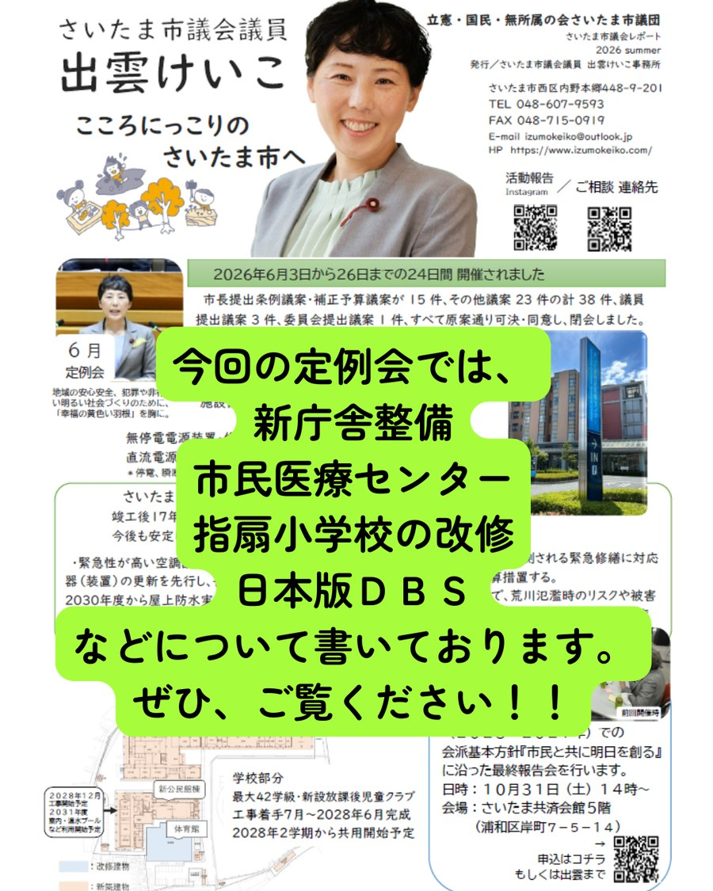
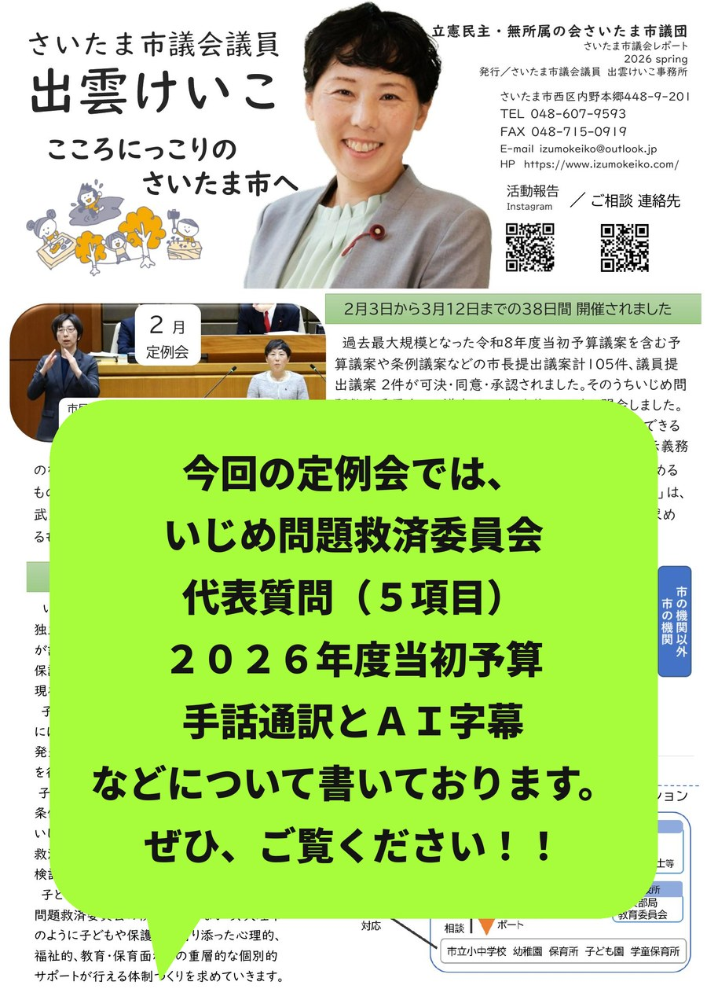
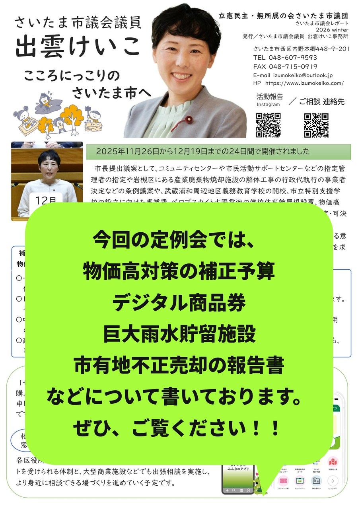
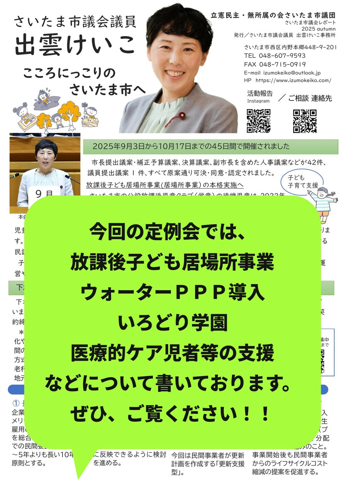
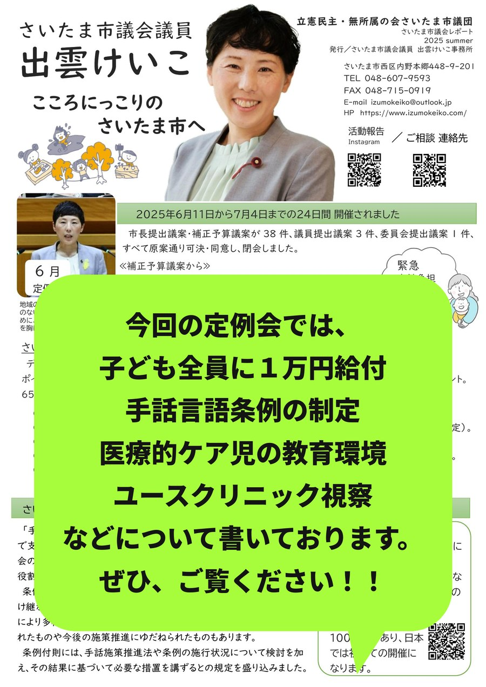
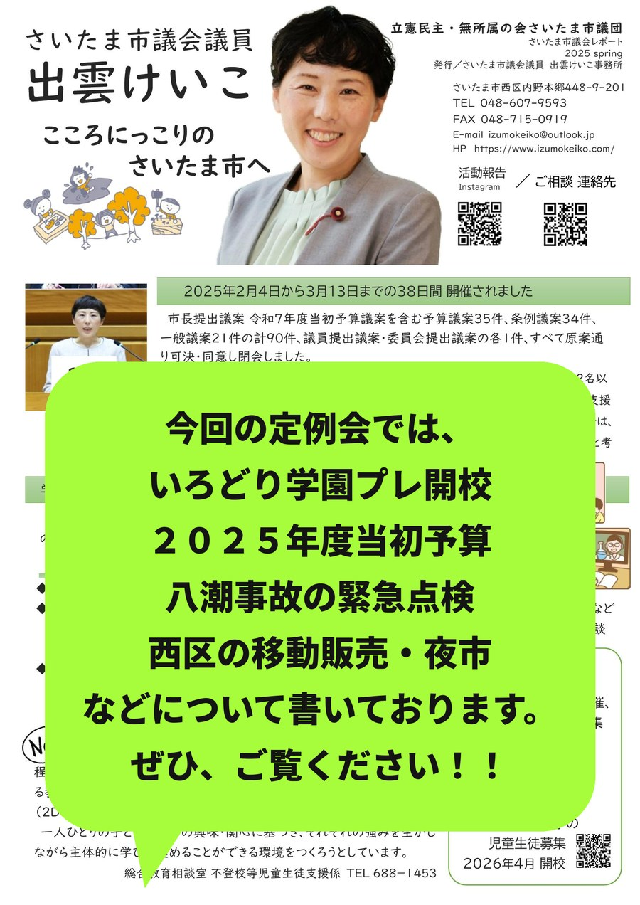

定例会で何を質問し、行政がどう答え、その後どうなったか。出雲けいこの議会活動を定例会ごとにまとめています。
2026年6月3日から26日までの24日間開催されました。市長提出条例議案・補正予算議案が15件、その他議案23件の計38件、議員提出議案3件、委員会提出議案1件、すべて原案通り可決・同意し、閉会しました。

レポート紙面（PDF）を見る補正予算案の一つとして、さいたま市民医療センターの改修が可決されました。
※無停電電源装置・直流電源装置は、停電や瞬断等の際に、心肺蘇生装置などの医療機器や非常照明へ電源を供給する役割があります。
竣工後17年が経過し、一部の設備機器が更新時期を迎えています。今後も安定した医療提供体制を維持するために実施します。
4月に基本設計説明書が取りまとめられました。今後、実施設計や建設工事に向けた準備と、さいたま新都心バスターミナルの解体も合わせて進められます。新庁舎は、防災機能や高い環境性能を備え、持続的な行政サービスを提供する拠点として整備されます。地上19階・地下1階の行政棟、議会棟、中広場棟で構成され、さいたま新都心駅やコクーンシティとは歩行者デッキで接続。完成は2031年度を予定しています。
| 内訳 | 2025年度以前 | 26年6月補正 | 27年度以降 |
|---|---|---|---|
| 基本設計業務費 | 約6億円 | ― | ― |
| 環境アセス業務費 | 約1億円 | ― | ― |
| 実施設計業務費 | ― | 約14億円 | ― |
| ECI技術協力業務委託費 | ― | 約0.3億円 | ― |
| 工事監理業務費 | ― | ― | 約4億円 |
| 発注者支援業務費 | 約1億円 | 約0.7億円 | 約2億円 |
| 調査・設計費 計 | 約29億円 | ||
| 建物建設費 | 約702億円 | ||
| 既存施設解体費 | 約3億円 | ||
| 本体工事費 計 | 約705億円（うち地方債519億円） | ||
| 移転費・什器購入費等 | 約35億円 | ||
| 合計（概算） | 約769億円 | ||
※調査・設計費は委託業務別の概算額を記載。街区外の歩行者デッキ整備工事費は、さいたま新都心にぎわい創出事業に計上。既存施設解体費は、整備予定地の「さいたま新都心バスターミナル」及び「新都心みどり広場」を指す。移転費は、移転計画業務費、引越し業務費、什器購入費等を想定しており、今後策定する移転計画に基づき精査。
現時点での総事業費は約769億円です。内訳は、調査・設計費約29億円、本体工事費（解体工事費を含む）約705億円、移転費約35億円です。財源は、国庫補助金4%、地方債74%、庁舎整備基金など22%を予定しています。新庁舎整備等基本構想（21年）では約221億円とされていましたが、今後の職員数の増加に伴う設計変更や物価・労務単価の上昇などにより事業費が大幅に増加した一方で、外装や屋上計画の見直しなどにより、一部コスト縮減も図られています。今後も機能を精査するとともに、事業費や計画変更などについて市民への丁寧な説明が求められます。
また、中央区役所再編や義務教育学校整備などで入札不調が続いたことを踏まえ、今回はECI方式（設計段階から施工予定者が参画する方式）を採用します。施工者の技術やノウハウを実施設計に反映するとともに、市から独立した発注者支援業者が専門的な助言やチェックを行う予定です。
新庁舎整備に伴い、さいたま新都心バスターミナルは今年度末で閉鎖されます。バスターミナルは、東京2020オリンピック・パラリンピックでのバス需要などを見据えて20年6月に開設されましたが、昨年度までの累計では支出約3億円に対し、収入約2億円となっています。廃止後は、高速バス乗り場のみをさいたま新都心駅東口交通広場へ移設し、待合室や一般駐車場、バス駐車場などの機能は廃止される予定です。
今任期（2023〜2027年）での会派基本方針『市民と共に明日を創る』に沿った最終報告会を行います。
参加申込は出雲けいこ事務所まで、または下の「ご相談・ご要望」ページからご連絡ください。
こども性暴力防止法（日本版DBS）は、12月25日に施行されます。子どもと接する仕事に就く人の性犯罪歴を確認し、子どもへの性犯罪を未然に防ぐ制度です。
性犯罪は再犯率が比較的高いこと、被害者は長期間にわたり心身に大きな影響を受けること。「被害が起きる前に、未然に防ぐ仕組みが必要」という考えで制度化されました。
性犯罪歴があった場合は、子どもと接しない部署への配置転換や、状況に応じて採用見送り・解雇などの対応がとられます。
被害は女の子だけではありません。男の子も性暴力の被害を受けています。強制性交等の認知件数のうち、被害者が20代以下が8割以上、そのうち10代以下が4割以上を占めています。ワンストップ支援センターへの相談者の被害時の年齢は、約半数を10代以下が占め、中学生以下に限れば、3割にもなることがわかっています。
あなたの身体はあなたのもの。水着で隠れる部分（プライベートゾーン）は大切な場所です。好きな人、先生、知っている人でも同じです：見せなくていい／触らせなくていい／イヤなことは断っていい。
「誰にも言わないでね」と言われても、イヤだったことや怖かったことは信頼できる大人に話してください。あなたは悪くありません。秘密にしなくていいのです。
子どもは被害を受けても言葉にできないことがあります。次のような変化が見られることがあります：急に元気がなくなった／頭痛や腹痛が続く／夜眠れなくなった／おねしょが増えた／学校へ行きたがらない／攻撃的になる／不安が強くなる（※サインが全く現れない場合もあります）。
子どもから相談されたら、まず「話してくれてありがとう」「あなたは悪くないよ」と伝えてください。子どもの安全を守るため、一人で抱え込まず専門機関へ相談してください。
出典：内閣府「こども・若者の性被害に関する状況について」。このコーナーは、生成AIと共同で作成しました。
ノーベル平和賞を受賞した日本被団協の地域組織である埼玉県原爆被害者協議会（しらさぎ会）の高橋薄さんから、被ばく体験や戦争の実相についてお話を伺いました。被ばくや戦争を体験した方々が年々少なくなっています。だからこそ、戦争を知らない私たちの世代が、その記憶や教訓をどう受け継ぎ、次の世代へ伝えていくのかが問われています。平和は、願うだけでは守れません。知り、学び、考え、語り継いでいくこと。その積み重ねが未来につながるのだと、改めて感じた時間でした。
6月定例会から、保健福祉委員会の委員長を拝命いたしました。9月定例会は、9月2日〜10月16日までの45日間（予定）です。
市政に関するご意見・ご要望をお聞かせください
ご相談・ご要望ページへ2026年2月3日から3月12日までの38日間開催されました。過去最大規模となった2026年度当初予算議案を含む予算議案・条例議案などの市長提出議案計105件、議員提出議案2件が可決・同意・承認されました。そのうちいじめ問題救済委員会の1議案は、一部を修正可決し閉会しました。
議員提出議案①「消費者がより安心して食品を選択できる表示制度に向けた検討・措置を求める意見書」は、表示義務のないゲノム編集応用食品について、消費者の知る権利・選ぶ権利を守るため、食品表示の充実を国に求めるもの。②「イランを巡る軍事的緊張の高まりに対し、外交的解決に向けた国際社会との連携を求める意見書」は、武力行使と報復の連鎖を抑え、核問題を含む諸課題を対話と国際法に基づき平和的に解決するよう求めるもの。いずれの意見書も、全会一致で可決されました。

レポート紙面（PDF）を見るいじめの認知件数やいじめの重大事態が増える中、独立した第三者機関として「いじめ問題救済委員会」が設置されます。小・中・高校生年代の子どもたちや保護者から、学校をはじめ、塾やスポーツクラブなどで現在進行中のいじめの相談を受け付けます。
子どもの相談のノウハウを持つ相談員と、救済委員には弁護士・公認心理師などで対応します。いじめが発生している施設などへ調査・調整・勧告・要請などを行います。子どもの意見を反映した「（仮称）子どもの権利条例」を2028年度の施行を目指し、いじめ問題救済委員会は子どもの権利救済機関へと発展的に解消されることが検討されています。
子どもの権利条例の制定に向けては、いじめ問題救済委員会の検証を行いながら、天理市のように子どもや保護者に寄り添った心理的、福祉的、教育・保育面からの重層的な個別サポートが行える体制づくりを求めています。
このうち、いくつかの項目について、以下で詳しくご報告します。
Q1.人口減少・低成長時代を見据えた市政運営の中で、「行わない」「進めない」「立ち止まる」対応も必要だと考える。どのような考え方や基準に基づき、政策の優先順位を判断するのか。
A1.優先度の基本的な考え方は、1）市民の生命・身体・財産を守る危機管理・防災機能の強化に資する事業を最優先とする。2）市民生活に密接に関わる既存施設の改善・再整備など、適切な市民サービスを継続するための事業を着実に実施する。3）都市拠点形成や魅力向上など、市の成長・発展に資する事業も、必要性・政策効果を見極め判断する。以上のような考え方を基本に、今後も市民の声を幅広く聞きながら、適時適切に判断していく。
Q2.それらの判断を行う場合は、どのように示していく考えなのか。
A2.事業の見直しは、市民生活に直接影響があるため、その判断の在り方が重要である。一定の判断を行う際は、検討プロセスを公表する。様々な機会を捉えて、市民や議会に丁寧に説明し、理解を得ながら進める。
Q.新市庁舎整備構想では、当初案（2023年）の200億円から現行案では770億を超えている。規模や機能を見直した複数案を検討し、事業費や将来負担を整理し、市民への判断材料を示すべきでは。
A.新庁舎整備は物価・労務高騰の影響はあるものの、今後80年使用する都市経営拠点として必要不可欠。学識経験者や市民、関係団体が入った審議会やワークショップなどでニーズ把握や市民が集まるシンボル的な庁舎の方向性が整理されてきた。そのため計画見直しには、議論や検討のための時間を要し、結果的に事業費の縮減につながらない懸念があるため、速やかに設計・工事を着手していく。
さいたま市HPには、新庁舎整備などに係る主な検討経緯が時系列で掲載されています。今まで行ってきたオープンハウスやパブリックコメント、市議会の特別委員会などでの報告資料も確認できます。
Q.市立病院の看護師配置基準は守られているが、30分以上のアラームが鳴るなど、現場や入院家族から看護人材が圧倒的に足りていないと聞いている。人員増員やアラーム対応強化をどのように行っていくのか。看護師の増員のために、国への改善要望が必要ではないか。
A.小児病棟では国の基準を満たす看護職員を配置しているが、小児特有の細やかな介助（食事・排せつ・睡眠・精神的なサポート）が必要なため、診療報酬評価見直しを活用して保育士を増員、週休日もシフトを工夫して対応。看護補助職員を日勤に加え夜勤にも配置し、看護師負担の軽減と安全な医療体制の確保に努めている。アラーム対応強化のため、年齢別基準値の設定・医師連携による患者の状態に応じた設定、意識を高めるための指導、ナースコール連携機器導入などを検討し、緊急度の高い処置を迅速に行えるように検討を進める。今後も診療報酬を活かし、必要な人員確保に努める。看護師配置基準は多くの自治体の共通課題であり、本市単独ではなく、全国自治体病院協議会などを通じて国に要望することを検討する。
| 指標 | 数値・状況 |
|---|---|
| 患者1人当たり1日総看護時間 | 1,164.9分 |
| 成人病棟との比較 | 約6.5倍 |
| 必要看護師数（平均） | 14.4人 |
| 各勤務帯の不足数 | 8〜10人 |
出典：小児患者に要する看護時間と適正人員配置の研究
Q1.埼玉県医療的ケア児者等実態調査結果（2024年）では、医療的ケア児者の約半数が災害時に同居家族以外の手助けがなく、支援体制の弱さが明らかになっている。地域の医療・保健・福祉関係者との連携強化や、家族・市職員・避難所、それぞれに向けたガイドブックの作成、また個別避難支援プランの作成について伺う。
A1.医療的ケア者などが災害時に適切な支援を受けるには、医療・保健・福祉の支援者や避難経路を事前に定めた個別避難支援プランの作成が重要。個別避難支援プランの作成の優先度が高い医療的ケア者などを対象に、相談支援専門員などの福祉専門職が参画するモデル事業を行い、関係機関と連携し作成する。要配慮者やその支援者に向けて、事前の準備や実際に災害が発生した場合にとるべき行動などをまとめた「災害時要配慮者支援マニュアル」を公開し、周知啓発を行っている。
Q2.個別避難支援プランの作成に福祉専門職だけでは医療対応が不安。当事者団体・障害福祉施設・家族会との平時からのネットワークが必要では。
A2.作成には、保健所などが支援の輪に入る予定。当事者団体などからも意見を伺いながらマニュアル作成なども取り組んでいく。
支援マニュアルは医療的ケア児を含む多様な要配慮者と支援者にとって有用な内容となるよう見直し、避難所運営にも活用しながら、今後も支援体制の強化と周知啓発に取り組みを進めていきます。
「シンカし続けるまちへ。暮らしを高め、共創で希望を拓く予算」として、一般会計：7,160億円（前年比＋126億円、＋1.8%）。全会計：1兆2,000億円（前年比＋337億円、＋2.9%）で過去最大となりました。2030年のSDGs達成に向けた事業として、以下が挙げられます。
拠点となる本校と6か所がキャンパスになります。自分のキャンパスに通いながら、他拠点と時間ごとにオンラインでつなぎ、学年ごとには月2〜3回集まる機会があります。次回10月の転入学は、7月ごろに体験会を開催する予定です。学校に長期欠席している子どもたちは約3,000人いる中、いろどり学園に通う子どもたちは140人弱です。フリースクールや塾、その他の居場所にいる子ども達も含めた学び続けられる環境を作り出していく必要があります。
外出支援事業では、外出時の同行支援に加えて、おうちでの着替えやおむつ交換などの子育て支援ができるようサービス内容が広がりました。利用しやすさや1歳以上での利用も可能となることが必要です。
Q.2026年度当初予算「シンカし続けるまちへ。暮らしを高め、共創で希望を拓く予算」とし、『共創』が全体の柱として位置づけられました。従来の「協働」や「連携」は、行政が主体となり、市民や企業、NPOなどが支えるという構図が多かったと受け止めている一方で、近年は課題が多様化・複雑化し、従来型の協働・連携だけでは対応しきれない局面が増えている。今回の『共創』をどのように捉えているのか。
A.本市は、2035年以降の人口減少や激甚化・頻発化する自然災害など、容易に解決できない社会課題に対応する必要がある。市民の暮らしをこれまで以上に支え高めるとともに、行政だけでなく、市民や事業者などが互いに対等の立場で協働し、新たな価値や仕組みを生み出していくことと認識している。
Q1.生産緑地や市街化調整区域の開発などによって緑の減少が進む中で、どのように緑を増やし、経済活動や脱炭素社会の実現を両立させるのか。気候変動の深刻化や生物多様性の危機が高まる中、従来の「みどりの条例」や公共施設緑化マニュアルなどの見直しが必要ではないか。
A1.ゼロカーボンシティの実現に向けて、公共施設への太陽光発電設備の導入やLED化など、行政が率先した取組を進めており、CO2削減も着実に進んでいる。しかしながら、近年の開発や生産緑地の減少で緑の量・質、生物多様性への影響が課題である。「緑の基本計画」を軸にグリーンインフラの考え方を取り入れ、公共施設緑化マニュアルについては、緑を増やす方向で見直しの検討を進める。
名古屋市では、市の中心部や市街化調整区域を含む市全域で緑化規制を強化しています。さいたま市でも経済活動などでマイナスになる分を増やすための対策を。
Q.産休・育休中の保育施設の利用について、転居などで上のきょうだい児の転園が決まると、育休対象の子どもも預けて復職しなければならず、家族全体で負担が大きい。そのため制度の柔軟な見直しが必要では？
A.育休中でもきょうだい在園児の継続利用を認めているのは「子どもの環境を変えないため」である。転園した時点で環境は既に変わっているため、復職を前提としている。また、引っ越しなどと転入園、復職となることは、その家族の生活への影響は認識している一方で、保育園の待機児童がある状況のため、現状では制度変更は難しい。
Q1.国から、補装具費支給制度の支給事務について（旧完成用部品について特例申請を認める運用）が出されている。どのように運用に反映しているのか。
A1.補装具の支給申請や決定は、区役所の支援課が、技術的な判定は障害者更生相談センターが担っている。
Q2.国の通知では、自治体ごとの判断のばらつきを防ぐため、特例申請を適切に認めることが示されている。その判断はどのように行っているのか。
A2.個々の障害の状態に応じて、本人に適した補装具かを判断している。基準にない補装具であっても必要性が認められる場合には、医師や技術職員、ケースワーカーなどの意見を踏まえ、「特例補装具審査会」において判定を行い、支給の可否を決定している。
手話言語条例を制定したことを契機に、2月定例会6日目、最終日の本会議にて、手話通訳者が入り、インターネット中継とAI字幕を試行実験しました。本会議場では、演壇付近で手話通訳者が発言を同時通訳。インターネットの配信では、通訳者と共にAIによるリアルタイム字幕を表示しました。今後も聴覚に障害のある方などに対する情報取得の機会拡大と利便性向上に取り組んでまいります。
市政に関するご意見・ご要望をお聞かせください
ご相談・ご要望ページへ2025年11月26日から12月19日までの24日間開催されました。コミュニティセンターなどの指定管理者指定、岩槻区の産業廃棄物焼却施設解体、武蔵浦和周辺地区義務教育学校の開校、物価高対策などを盛り込んだ167億円余りの一般会計補正予算案など60件が可決。議員提出議案「危機的状況にある自治体病院の存続に向けた支援を求める意見書」「冤罪被害者の迅速な救済のため刑事訴訟法の再審規程の早急な整備を求める意見書」も全会一致で可決されました。

レポート紙面（PDF）を見る申し込み・抽選は2〜4月、利用期間は4〜8月の予定です。行政ポイントを利用し、利用店舗はさいコインと同様となります。
さいたま春日部線の地下に、大雨時の浸水被害を軽減するための雨水貯留管を計画しています。降り止んだ後に、放流先の水位が下がった時点でポンプにより排水する仕組みです。
市は内部調査検討会議で原因究明と17項目の再発防止策を実施したのに加え、外部の第三者委員会を立ち上げ、8か月の検証を経て報告書を公表しました。委員会は、当時の所長が決裁を経ずに売却を認識・容認していたと認定し、組織的な連携不足、発言しにくい職場環境、人員配置の不適切さが原因と指摘しました。
市政に関するご意見・ご要望をお聞かせください
ご相談・ご要望ページへ2025年9月3日から10月17日までの45日間開催されました。市長提出議案・補正予算議案、決算議案、副市長を含めた人事議案など42件、議員提出議案1件、すべて原案通り可決・同意・認定されました。

レポート紙面（PDF）を見るさいたま市の公設放課後児童クラブ（学童）の待機児童は、下表のとおり高い水準が続いています。この数には、250か所以上ある民設学童の待機児童は含まれていません。今回の居場所事業の本格実施は、待機児童の解消と保護者の負担軽減を目指すものです。あわせて、影響を受ける民設学童の運営継続のための委託料や利用料減少への支援策も設けられました。
※公設学童（70か所）のみの数値です。
下水道事業の継続的な運営に向けて、更新工事を含まないウォーターPPP（管理・更新一体マネジメント方式）のレベル3.5の導入を計画。対象エリアは北区・大宮区・中央区で、2026年度に実施方針を公表・事業者を募集し、2027年度に事業契約を締結予定です。
| 項目 | 内容 |
|---|---|
| 長期契約 | 原則10年。企業の参画意欲やスケールメリット、雇用の安定を総合的に勘案。 |
| 性能発注 | 仕様指定から性能指定に移行する方向で検討。 |
| 維持管理と更新の一体マネジメント | 効率的・効果的な維持管理（修繕を含む）と更新を一体的に実施。 |
| プロフィットシェア | 民間の新技術導入や工夫で生まれたコスト削減分を官民で分配。 |
職員数の減少や老朽化施設の急増への対応が期待される一方、地元企業の受注機会の減少や職員の技術力低下などの懸念点もあり、市民に不利益が出ないよう今後の展開を注視しています。
Q.学びの多様化学校「いろどり学園」のプレ開校の成果と課題は。
A.プレ開校には189人が参加し、3年ぶりに外出できた児童や、久しぶりに授業を受けた生徒もいた一方、周囲の様子を気にして不安定になる子どももおり、対応策を検討していきます。
Q.こどもの権利条例の制定に向けて、多様な背景を持つ子どもの声をどう反映するのか。
A.身近なテーマのワークショップやアンケートを実施し、率直な意見を幅広く収集。その意見を基に条文案を丁寧に検討し、審議会やパブリックコメントなどを経て条例制定を目指します。
Q.スクールバスが利用できない医療的ケア児や重度障害児が通学する際、福祉タクシーに看護師と同乗し、利用できるか。
A.医療資格を持つヘルパーが同乗する形で移動支援を利用可能です（1回30分）。埼玉県特別支援教育就学奨励費で車両（福祉タクシーなど）と連携することもできます。
市政に関するご意見・ご要望をお聞かせください
ご相談・ご要望ページへ2025年6月11日から7月4日までの24日間開催されました。市長提出議案・補正予算議案が38件、議員提出議案3件、委員会提出議案1件、すべて原案通り可決・同意し、閉会しました。

レポート紙面（PDF）を見る補正予算議案から、18歳以下の子ども全員に1万円を給付します。案内送付は8月中旬、支給は児童手当受給者には申請不要で8月下旬から、それ以外の約1割の対象者には9月下旬から申請を受け付け、順次支給予定です。
あわせて、さいたま市みんなのアプリを活用し、デジタル地域通貨「さいコイン」での決済額の15%をポイント還元（1回の上限1,500ポイント）。65歳以上の方は、アプリ内アンケート回答で2,000ポイントが付与されます。
「手話は言語である」という認識に基づき、手話の理解と広がりを地域で支えあい、すべての人が心を通わせ、相互の人格と個性を尊重しあう社会の実現を目指すものです。基本理念、市の責務と事業者・市民などの役割を規定し、施策の推進方針や財政上の措置も盛り込まれました。条例付則には、手話施策推進法や条例の施行状況について検討を加え、その結果に基づいて必要な措置を講ずるとの規定も盛り込みました。
県立・市立特別支援学校に通う保護者と県内自治体議員とともに、医療的ケアが必要な子どもたちの登下校や教育環境、給食提供体制などを視察しました。
| 志村学園（東京都） | さいたま市立特別支援学校 | |
|---|---|---|
| 通学支援 | 運転手・看護師と子ども2人単位で専用通学車両の送迎 | 医療的ケアがある場合、スクールバス利用不可。保護者による自主登校が原則。 |
| 給食対応（胃ろう） | みんなと同じメニューのミキサー食を教員等がシリンジで注入 | 看護師が半固形栄養剤をショット注入 |
Q.医療的ケア児の通学体制の改善については。
A.保護者の負担軽減は重要な課題と認識しています。安全な通学を保障するために、他自治体の事例を参考にしながら実施の可能性を検討します。
川越市で開催されている、10代・20代のための「たんぽぽユースクリニック」を視察しました。性やこころ・からだの悩みを、産婦人科医・保健師・助産師などの専門家に相談できる「街の保健室」です。
Q.若者のための街の保健室の設置について、さいたま市の見解と今後の取組方針は。
A.若者が性やこころ・からだの悩みを専門家に相談できる「街の保健室」として重要であり、正しい知識の提供と安心して相談できる場の必要性を認識しています。他市の定期的なユース向け相談事業を参考に、実施方法や場所などの情報を収集し、本市の現状の課題を整理していきます。
核兵器禁止条約の趣旨に賛同し、広島・長崎の経験を世界と共有しながら、日本が国際社会の中で主導的な役割を果たすことを国に求める意見書を全会一致で採択しました。
市政に関するご意見・ご要望をお聞かせください
ご相談・ご要望ページへ2025年2月4日から3月13日までの38日間開催されました。2025年度当初予算議案を含む予算議案35件、条例議案34件、一般議案21件の計90件、議員提出議案・委員会提出議案の各1件、すべて原案通り可決・同意し閉会しました。委員会提出議案「放課後児童クラブ（学童）が常勤の放課後児童支援員を2名以上配置した場合の補助基準額の適用条件の見直しを求める意見書」は、紹介議員として取り組み、可決されました。

レポート紙面（PDF）を見るさいたま市の小・中学校に通う約10万人の子どものうち、年間30日以上欠席している子どもは2,677人（23年度）で、年々増加傾向にあります。学校に入りづらい子どもたちへの取り組みとして、各校内の居場所「Solaるーむ」の導入や、市内6か所の教育相談室・教育支援センターでの相談、不登校等児童生徒支援センター「Growth」でのオンライン学習などを行っています。
今年7月にプレ開校する「学びの多様化学校（いろどり学園）」は、地域の学校から転籍し、自分らしく学べる教科などを特別な教育課程として編成。教育相談室の6か所をキャンパスに登校するほか、自宅からのオンライン参加も、時々によって選びながら学ぶことができます。
国は口径2m以上の流域下水道管路の緊急点検を求めていますが、さいたま市が管理する管路には該当箇所はありません。しかし本市独自に、下水道維持管理指針に基づき腐食するおそれが大きい箇所と口径80cm以上の下水道管路（市内に約240km）を地上部からの目視によって緊急点検を実施し、異常はないことが確認されました。
今後は老朽化が進む下水道管が増加するため、下水道施設全体の劣化状況を予測しながら、予防保全のための点検・調査を毎年100km程度、腐食するおそれが大きい下水道管などの点検・調査を毎年50か所行い、維持管理・改築を一体的に捉えて計画的に老朽化対策を進めます。
西区では、ドラッグストアのウエルシアと協力した買い物の移動販売（モデル事業）や、6月からの西大宮駅前夜市が始まりました。小中学校の体育館エアコン設置は、宮前中学校（2026年1月工事予定）、栄小学校（2026年度工事）、指扇北小学校（2027年度工事）、大宮西小学校（2028年度工事）と、順次計画が進められています。
市政に関するご意見・ご要望をお聞かせください
ご相談・ご要望ページへ